Configuration
MockTab requests permissions from the system upon first launch, and drawing apps may need adjustment to take advantage of tablet features. This page describes system prompts that may appear, with per-application notes.
System permissions
macOS gates input devices behind multiple privacy prompts. Grant both, then relaunch MockTab. If a toggle won't stick, remove MockTab from the pane and re-add it. macOS binds grants to the binary's path, so moving or reinstalling invalidates a previous grant.
Accessibility
Accessibility lets MockTab inject pen events into other apps.
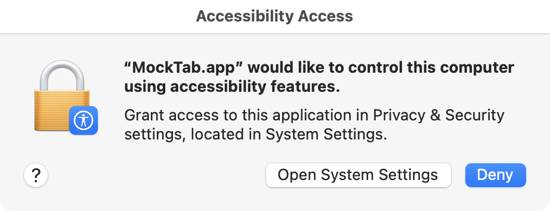
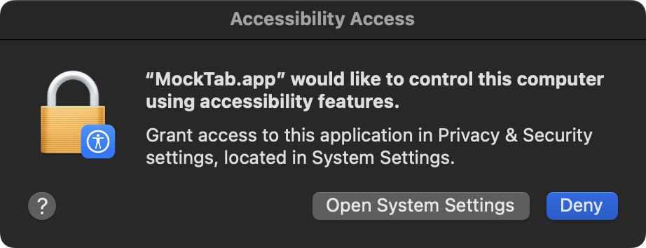
Clicking Open System Settings launches the Accessibility pane. Usually requires admin approval.
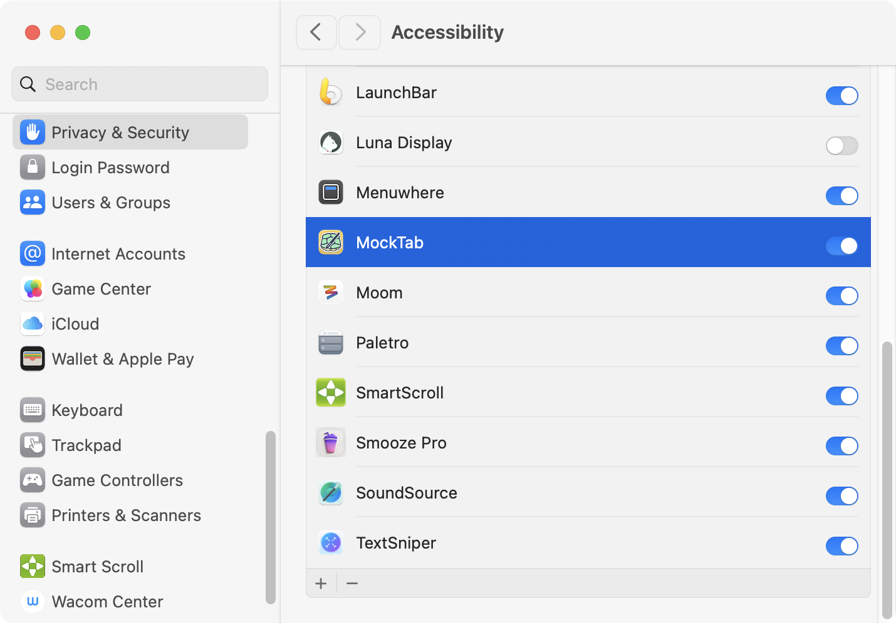
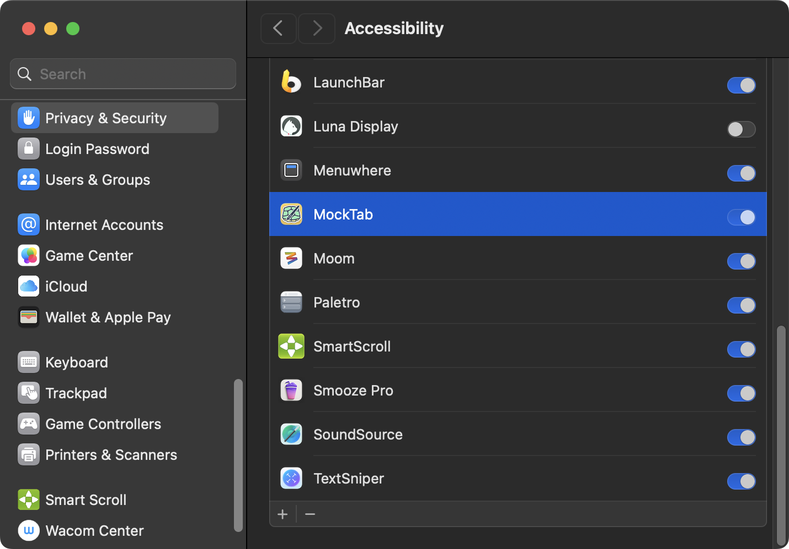
Input Monitoring
Input Monitoring lets MockTab read raw tablet input.
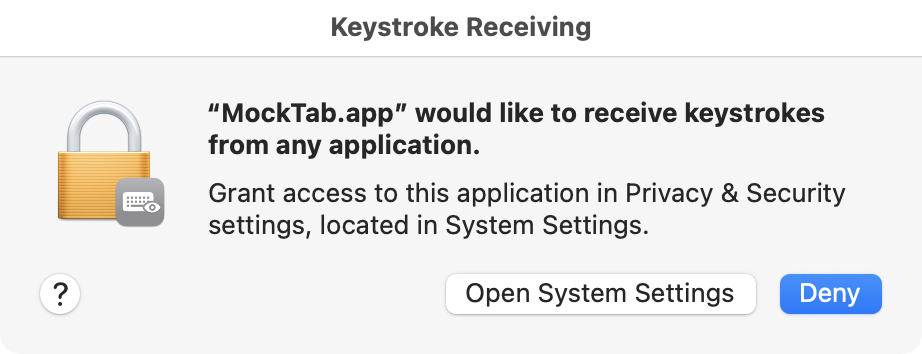
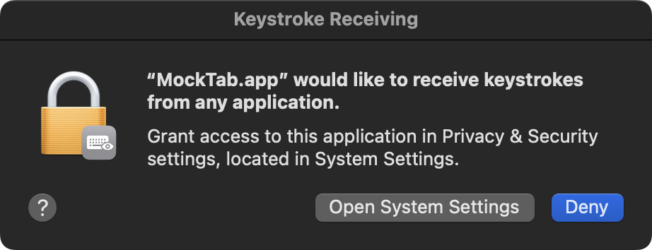
Toggle MockTab on in the Input Monitoring pane, then relaunch MockTab when macOS asks.
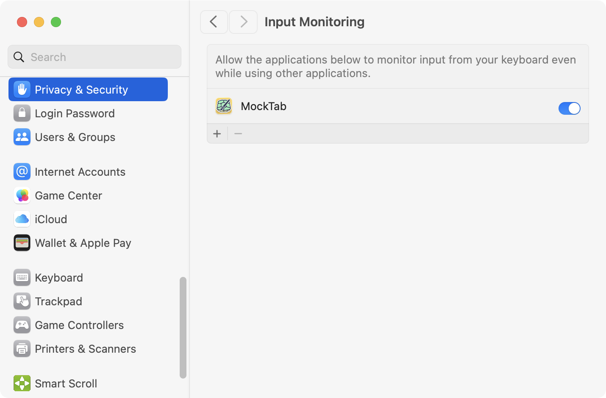
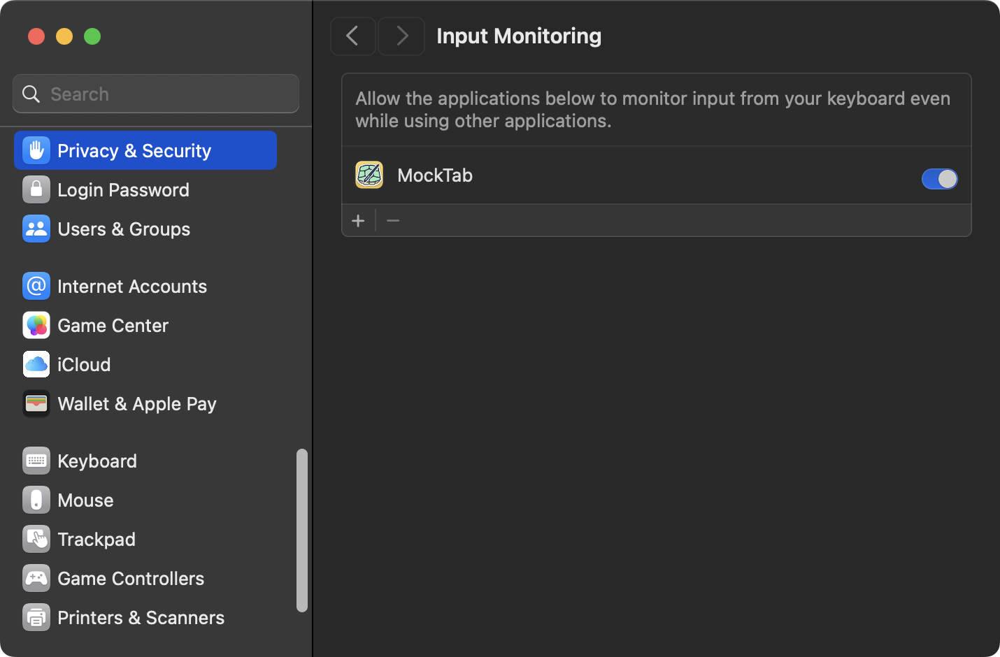
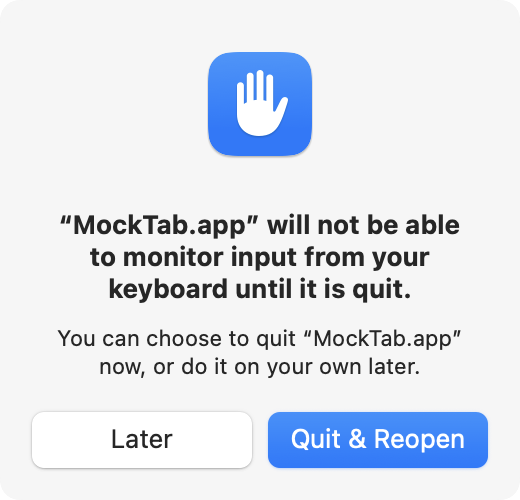
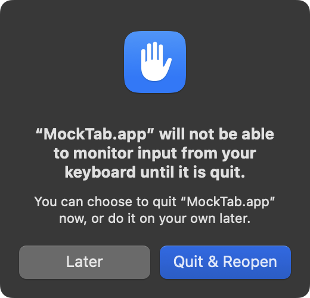
Application notes
Most macOS drawing apps receive pressure and tilt without configuration. Stylus rotation is the outlier: only a handful of pen models (chiefly Wacom's Art Pen) report a true barrel rotation axis, and apps handle it inconsistently. The screenshots below show where each app exposes its rotation control. Background on the hardware axis itself lives in the Wacom Art Pen rotation notes.
Affinity Photo / Designer
Canva Affinity (formerly Affinity Designer / Photo / Publisher by Serif) picks up rotation automatically for brushes that have a rotation-driven dynamic enabled. The brush editor's dynamics panel provides options to set rotation using nib angle, size, or other parameters.
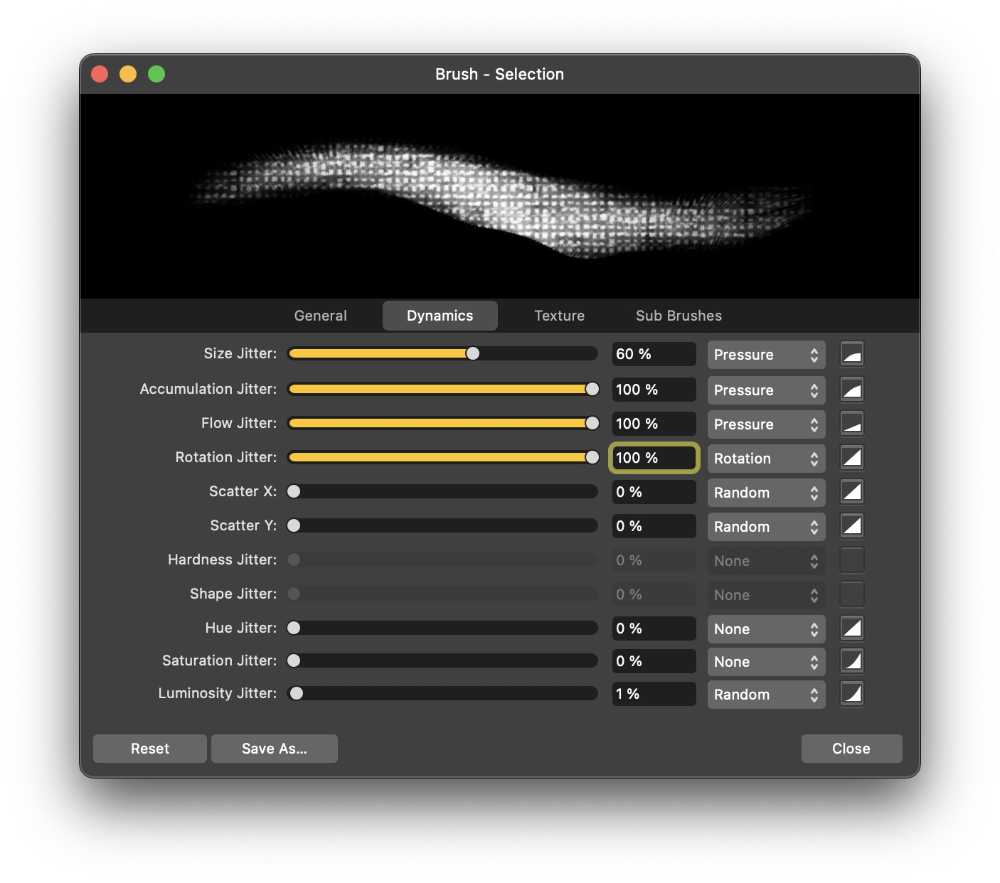
Adobe Illustrator
In Illustrator's brush options dialog, set the per-brush Angle variation to Stylus Wheel for rotation-driven nib angle. The control name is the same in every localization; only the surrounding labels translate.
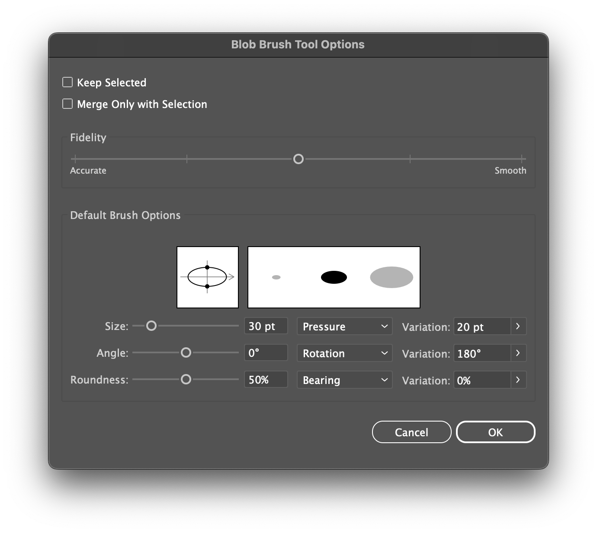
Krita
Krita exposes rotation as a sensor under the brush editor's Rotation parameter. Add the Rotation sensor and pick a curve to map raw barrel rotation onto brush tip orientation.
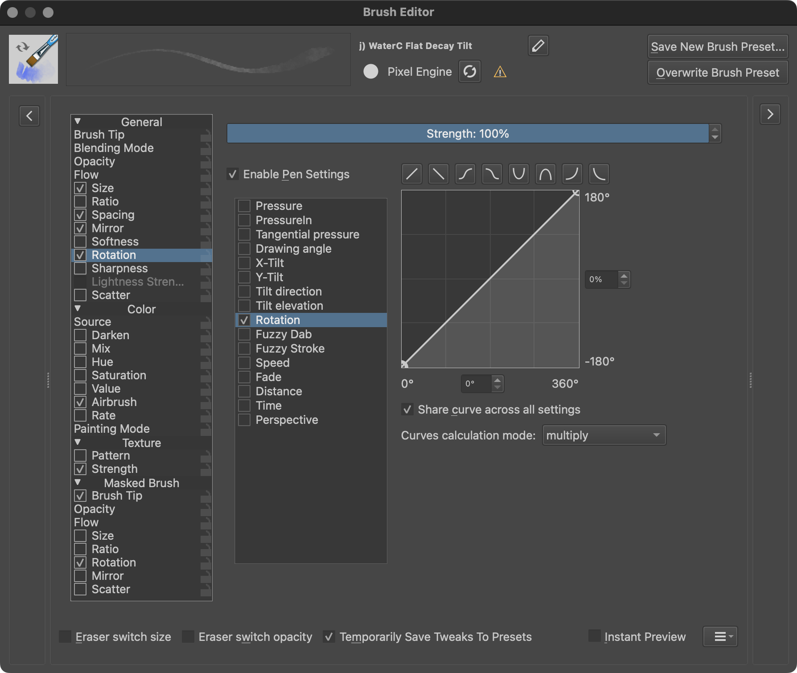
Adobe Photoshop
Photoshop's rotation detection may require additional configuration. MockTab includes a driver-side option, Art Pen: Swap Tilt with Rotation (in Pen Feel), that feeds barrel rotation into Photoshop's Pen Tilt control instead. Enable it when working with rotation-driven brushes in Photoshop.
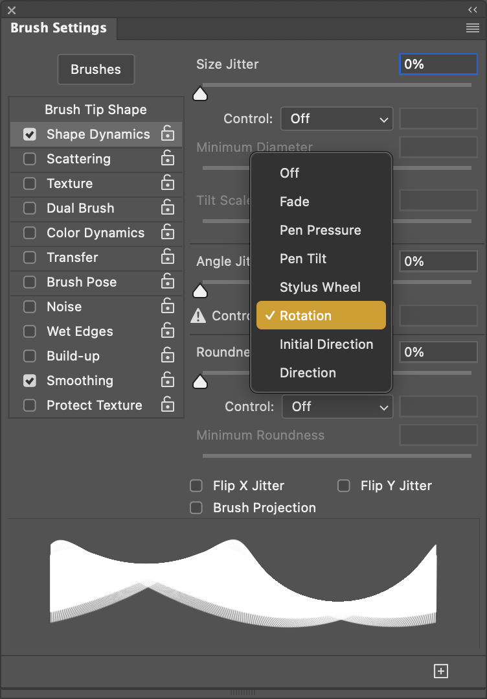
Escape Motions Rebelle
Rebelle reads rotation automatically upon selecting a rotation-aware brush.
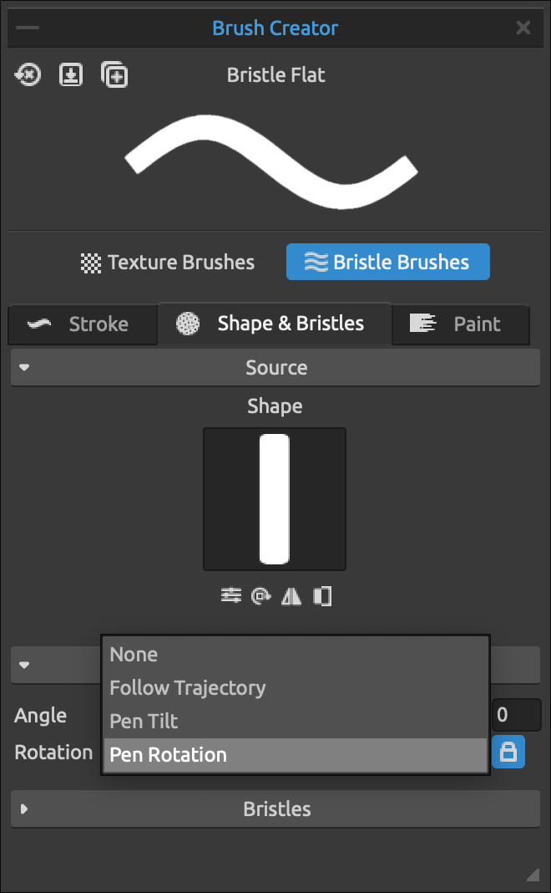
Rebelle > Tablet > Tablet Options also offers a built-in rotation invert.
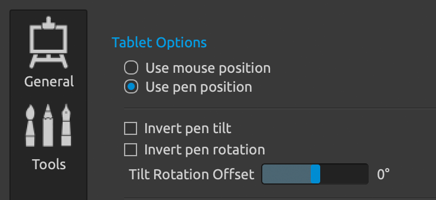
Panning
To map a button to a panning action (like the hand tool in many drawing apps), consider Smart Scroll or Smooze Pro.